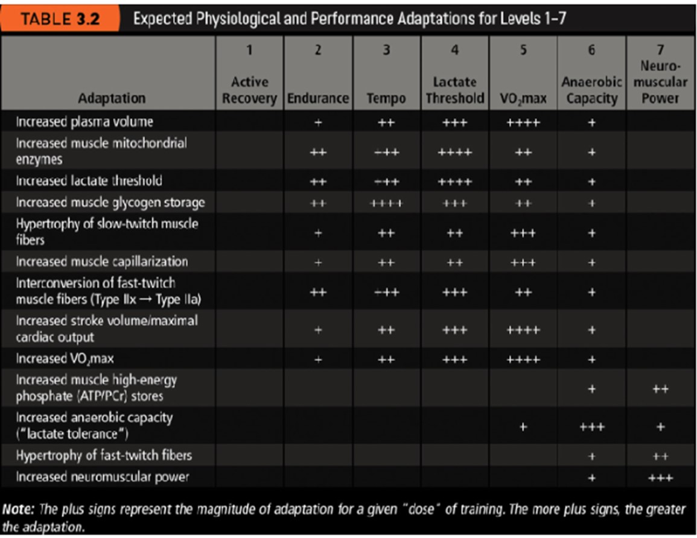
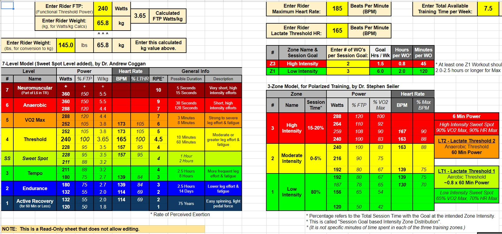
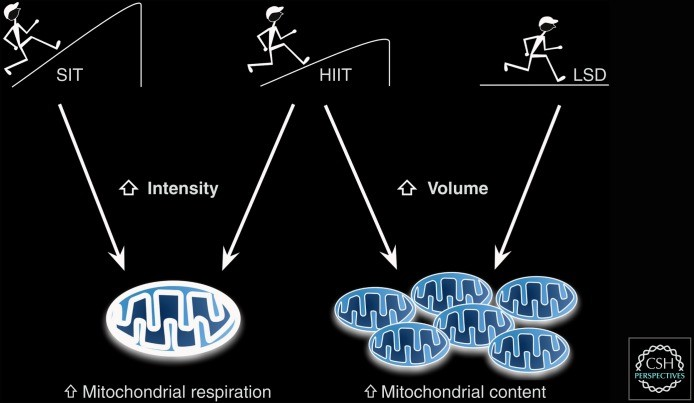
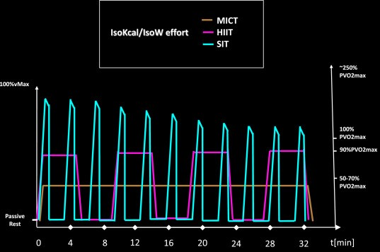

Zone 2 訓練的定義與效益
Zone2 訓練在 2020~2021 年時因為 Pogacar，連續兩年在環法拿下黃衫，當然以運動界來說大家會跟著冠軍去做，剛好他的教練也有分享她的訓練方式，就是強調 Zone2 訓練，也說可以增加粒線體的量，當然網路上也越來越多人在分享相關知識，我們來看一下運動科學界對於這部分相關的研究，首先我們先來看一下 Zone2 的定義是什麼。
 |
|---|
| 圖一：一些最大心率的來源及公式[1] |
在運動通常會使用心率來當作量化的一個指標，畢竟心率的量測儀器比較早被發明，所以相關的研究也比較多。在跑步圈也很多人只用心率來監測，而跑步的 Zone2 通常是說心率的 Zone2，是最大心率的 60~70% 的區間，不過最大心率的算法有很多種，220 – 年齡雖然是比較常用的方式，但是這在運動科學界已經是被證實是都市傳說。在運動科學界目前比較常使用 208 – 0.7*年齡，當然對於不同的運動會有不同的算法，之前也有相關的影片去研究這件事，有興趣的可以去看看那部影片。
而在自行車因為有功率計可以直接量測功率，且在運動科學界也非常早用功率自行車研究，所以在自行車界比較常用功率來監測，而功率訓練比較有名的就是 Coggan 所著的書，裡面也有相關的功率區間與相關益處，在書中把功率區間分成 7 區 以 FTP 當作基準，可以看到在書中顯示效益比較高的區間，是 Zone3~ Zone5 也就是 Tempo~VO2max 區間，Zone2 的效益從書中來看是沒有比燒高強度的區間還高，而無氧的訓練能夠練到較低強度無法練到的部分，所以爾偶也是要做高強度的訓練會比較全面，不過這張表中的效益不知道他怎麼得到的，但是心率只有分 5 區 而功率卻有分 7 區，且在 Coggan 的書中指有對應的 LTHR，並非用最大心率去區分區間，這邊就來看一下有沒有一個對應關係。
|  |
|---|
| 圖二：功率訓練及效益[2] |
當然你也可以自己去做量測，反正低強度的心率跟功率會有個穩定的關係，從網路上整理的表來看 最大心率的 Zone2，大概是對應到功率 Zone2 的底至中間，所以功率 Zone2 大概是到心率的 Zone2~ Zone3，當然這也只是大概而已，因為心率區間通常是固定，畢竟最大心率通常不會有太大的變化，但是功率區間會隨著訓練或是身體狀況，例如生病、受傷休養而伸縮，而且相較於心率 功率是一個比較敏感，且比較不會隨著外在環境而影響的指標，所以在自行車訓練會比較常用功率來當作標準。
|  |
|---|
| 圖三：功率與心率區間的對應[3] |
而 Zone2 訓練也在說對於粒線體的影響，粒線體就是人體的發電廠 能量由此產生，所以來看一下不同強度的運動，對粒線體的影響是什麼 這邊分成兩個部分，一個是對於粒線體的功能，另一個是粒線體的量，這邊分成三種 有衝刺強度的 SIT，跟最大攝氧量強度的 HIIT，和一個強度較低的 LSD，這三種課表對於粒線體也有不同的影響，較高強度的 SIT 是會提升粒線體的功能，也就是可以在短時間內產生較高的能量，低強度長時間的 LSD 則是會增加粒線體數量，粒線體數量較多則是可以騎得比較久，當然這也跟肌纖維的種類有關，其中 HIIT 則是功能跟數量都有提升，雖然 HIIT 增加粒線體的數量再多數，論文中的資料是沒有低強度的 LSD 多，但是有些論文也是有做出沒有顯著差異的結果，不過可能還需要再多點資料，才有比較強的證據說 LSD 增加的量比較多，而運動科學比較常用最大攝氧量來區分強度，衝刺強度超過最大攝氧量強度為 SIT，在 90% 最大攝氧量強度則是 HIIT，50~70% 為低強度的 LSD，70~90% 雖然圖中沒說 但算是 LT 的強度，所以這大概是不同強度對於粒線體的影響。
|  |
|---|
| 圖四：強度對粒線體的影響[4] |
|  |
|---|
| 圖五：強度區別[5] |
而在推 Zone2 訓練的也說可以消耗較多脂肪，就目前的研究[6]來看最大燃脂強度，大約是最大攝氧量的 40~50% 左右，當然還有很多因素會影響燃脂能力，就課表來說，除了強度還有時長，不過也不會影響太多 之前也有做過相關影片，也可以用我的 3.0 網站來做計算，而最大燃脂強度對應的心率大概是 Zone1，當然跟其他較高強度的課表相比，Zone2 訓練確實會消耗較多的脂肪，不過這只是 Zone2 訓練的其他益處而已，
那來看一下高強度與低強度課表的分配，對於一些運動生理指標有什麼影響，這篇論文[7]做了對於級化訓練和閾值訓練，的系統性回顧 文中也比較了很多運動生理指標，這邊我只挑出最大攝氧量，個人計時以及乳酸閾值這三者的改變，先來定義一下什麼叫做極化訓練，這邊將訓練區間分成三區，其中的 Z1 大概是對應 Coggan 的，Tempo 區間以下 Z2 則是 LT 與 VO2max，Z3 則是V O 2 max強度以上的課表，所以大部分的時間其實還是在 LT 以下，可以看成是做 LSD 與 HIIT，而 THR 就是 LT 的訓練至少占了 1/3，就結果來看極化訓練對於 VO2max，的成長較顯著 其餘兩者就沒什麼差異，所以就這篇系統性回顧的論文來看，課表中有低強度與高強度的訓練效益比較高。
而高強度的課表對於菁英選手來說幫助也很大，這篇論文[8]研究對於最大攝氧量超過 70 的選手，分成兩組去做測驗 一組是做較高強度的 SIT，另一組則是去做強度稍低的 HIIT，發現 SIT 組對於 20 分鐘最大功率有顯著進步，所以雖然 HIIT 同時能提升粒線體功能與量，但就這些論文看下來 LSD+SIT 的組合會比較好。
雖然目前說的 Zone2 訓練是以心率為主，但自行車以功率為訓練指標已經行之有年，而且靈敏度也是遠超過心率，當然這兩個區間也是有個對應關係可轉換，對應到的功率區間大概是 Zone2 底到一半，而 Zone2 訓練強調能夠增加粒線體的量，粒線體功能則是需要高強度課程來提升，且對於菁英選手來說 高強度課表也是非常有效，但一般高強度課表安排需要更多專業與指導，所以一般教練比較少會公開他們的安排策略，一訓練計畫中加入高強度的 SIT，可以補足 Zone2 訓練的不足。
參考資料：
[1]. Robert Robergs, Landwehr R. The surprising history of the “HRmax=220-age” equation. Journal of Exercise Physiologyonline 5(2): 1-10, 2002.
[2]. Allen H, Coggan A. Training and Racing With a Power Meter 3rd, 2018
[3]. https://global.discourse-cdn.com/trainerroad/original/2X/a/a10a07566dfc2852f84eb457dc411d3fd0f64ddf.png
[4]. Hughes DC, Ellefsen S, Baar K. Adaptations to Endurance and Strength Training. Cold Spring Harb Perspect Med. 2018 Jun 1;8(6):a029769. doi: 10.1101/cshperspect.a029769. PMID: 28490537; PMCID: PMC5983157.
[5]. Torma F, Gombos Z, Jokai M, Takeda M, Mimura T, Radak Z. High intensity interval training and molecular adaptive response of skeletal muscle. Sports Med Health Sci. 2019 Sep 11;1(1):24-32. doi: 10.1016/j.smhs.2019.08.003. PMID: 35782463; PMCID: PMC9219277.
[6]. Brun JF, Myzia J, Varlet-Marie E, Raynaud de Mauverger E, Mercier J. Beyond the Calorie Paradigm: Taking into Account in Practice the Balance of Fat and Carbohydrate Oxidation during Exercise? Nutrients. 2022 Apr 12;14(8):1605. doi: 10.3390/nu14081605. PMID: 35458167; PMCID: PMC9027421.
[7]. Silva Oliveira, P., Boppre, G. & Fonseca, H. Comparison of Polarized Versus Other Types of Endurance Training Intensity Distribution on Athletes’ Endurance Performance: A Systematic Review with Meta-analysis. Sports Med (2024). https://doi.org/10.1007/s40279-024-02034-z
[8]. Superior performance improvements in elite cyclists following short intervals vs. effort‐matched long intervals training, February 2020, Scandinavian Journal of Medicine and Science in Sports 30(5) DOI:10.1111/sms.13627 \
{kind=link}